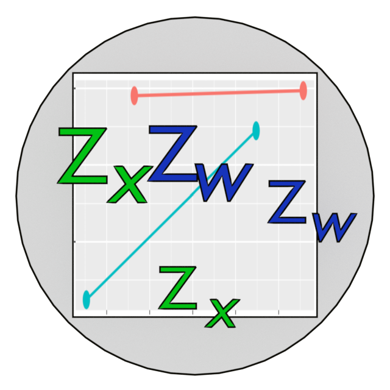

Changelog
Source:NEWS.md
stdmod 0.2.9.1
- Revised
update.std_selected(). Though still not recommended, it should now work more reliably if it needs to be called. (0.2.9.1) - Improved the printout of the
summary()ofstd_selected()andstd_selected_boot()outputs. It now prints the R-squared increase of the highest order term, as well as the F test for the increase, if the model has one and only one highest order term (e.g., an interaction term). (0.2.9.1)
stdmod 0.2.9
CRAN release: 2023-09-11
- Fixed the issue with
stdmod-package. (0.2.8.9001) - Improved the printout of the
summary()ofstd_selected()andstd_selected_boot()outputs. Small numbers are rounded to prevent the use of scientific notation, and small p-values can be printed in formats like p<.001. Users can also control the number of digits in the printout. See the help page ofprint.summary.std_selected()to learn more about new arguments (0.2.8.9002). - Finalized to 0.2.9. (0.2.9)
stdmod 0.2.8
CRAN release: 2023-06-24
- Added an R CMD check for noSuggests. (0.2.7.1)
- Removed
dplyrfrom the tests and Suggests. (0.2.7.2) - The tests using
visregwill be skipped ifvisregis not installed. (0.2.7.3) - Add a note in the printout of a
cond_effect-class object and the summary of astd_selected-class object. If one or more variables are standardized but bootstrapping is not requested, users will be recommended to usestd_selected_boot(). (0.2.7.4) -
stdmod_lavaan()switched to the bootstrapping algorithm used bylavaan(). It also updated to allow for partial standardization. To use the older algorithm, setuse_old_version()toTRUE. (0.2.7.5) - Finalized to 0.2.8. (0.2.8)
stdmod 0.2.7
CRAN release: 2023-03-26
- Updated pkgdown site to bootstrap 5. (0.2.6.1)
- Fixed a missing whitepace in the note of the
print()method of thesummary()output ofstd_selected(). (0.2.6.2) - Added
to_standardizetostd_selected()andstd_selected_boot(). (0.2.6.3) - Fixed a bug with
confint.std_selected()whentype = "lm"and bootstrapping is requested. Should not be an issue because t-based CIs should not be used when bootstrapping is requested. This option is just for testing. (0.2.6.4) - Updated examples to use
to_standardizeor mention it as a shortcut. (0.2.6.5) - Updated vignettes to introduce
to_standardize. (0.2.6.6) - Fixed a link in a vignette. (0.2.6.7)
- Finalized to 0.2.7. (0.2.7)
stdmod 0.2.6
CRAN release: 2023-03-10
- Improved the printout of the
summary()ofstd_selected()andstd_selected_boot()outputs. (0.2.4.9001). - Fixed deprecated functions and arguments in
ggplot2. (0.2.4.9002) - Fixed a problem with wrapping long lines in the printout of the
summary()ofstd_selected(). (0.2.4.9003) - Update GitHub actions.
- Fixed a missing link in an Rd file in old macOS machines. (0.2.6)
- Use
bibentry()in CITATION. (0.2.6)
stdmod 0.2.4
- Fixed a bug in
std_selected(): It now works correctly when a variable in the data frame is a factor. (0.2.0.1) - Added
confint()andcoef()methods forcond_effect-class objects.confint()can return confidence intervals based on t statistics, which are appropriate in some situations. (0.2.2) -
print()method forcond_effect-class objects can print confidence intervals based on t statistics. (0.2.2) - Added
do_boottostd_selected_boot(). If set toFALSE, it will not do bootstrapping. (0.2.3) -
cond_effect_boot()will disable bootstrapping in the original call if the output is generated bystd_selected_boot(), to avoid redundant bootstrapping inside bootstrapping. (0.2.3) - Added
do_boottocond_effect_boot(). If set toFALSE, it will not do bootstrapping. (0.2.4)
stdmod 0.1.7.7
- Updated references. (0.1.7.5)
- Minor changes due to Roxygen updates. (0.1.7.5)
- Added R CMD Check action (0.1.7.6)
- Minor changes due to Roxygen updates. (0.1.7.7)
- Fixed a typo in CITATION
stdmod 0.1.7.4
CRAN release: 2022-08-07
(All major changes after 0.1.7.1)
- Fixed a bug in
plotmod(). It now correctly handles more than two levels whenw_methodis set to"percentile". (0.1.7.2, 0.1.7.3) - Fixed a typo in DESCRIPTION. (0.1.7.4)
stdmod 0.1.7.1
CRAN release: 2022-05-11
(All major changes after 0.1.5)
- Added
plotmod()for plotting moderation effects. This function will check whether a variable is standardized. If yes, will note this in the plot. -
plotmod()can also plot a Tumble graph (Bodner, 2016) ifgraph_typeis set to"tumble". - Updated vignettes to use
plotmod()instead ofvisreg::visreg(). - Added
cond_effect()for computing conditional effects. This function will check which variable(s) is/are standardized. If yes, will note this in the printout. - Added
cond_effect_boot(), a wrapper ofcond_effect()that can form nonparametric bootstrap confidence intervals for the conditional effects, which may be partially or completely standardized. - Updated the print method for the summary of
std_selected()andstd_selected_boot(). - Added more vignettes to introduce the new functions.
-
stdmod_lavaan()now returns an object of the classstdmod_lavaan, with methods print, confint, and coef added.
stdmod 0.1.5
- Changed the column order of the coefficient table in
std_selected_boot()output. Bootstrap confidence intervals are placed next to parameter estimates. - Added
vcov()method forstd_selected()output. If bootstrapping is used, it can return the variance-covariance matrix of the bootstrap estimates. - Added
confint()method forstd_selected()output. If bootstrapping is used, it can return the bootstrap percentile confidence intervals if requested. - Other minor fixes.
stdmod 0.1.2
- Updated the methods for
std_selected().